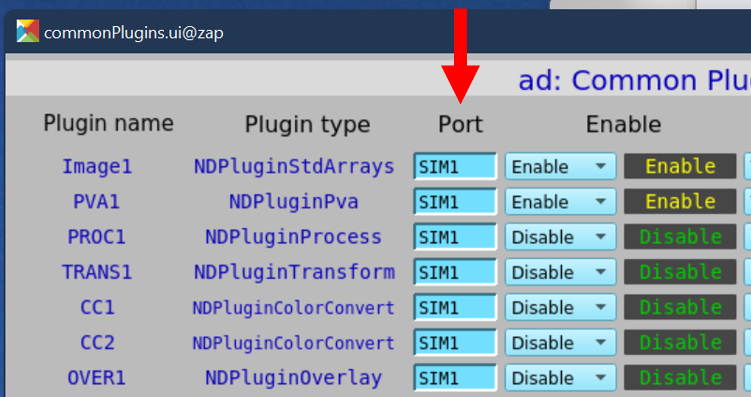

Area Detector with default HDF5 File Name#
Objective
Demonstrate and explain the setup of an EPICS area detector to acquire an image with bluesky and write it to an HDF5 file. Use the standard ophyd conventions for file naming and other setup. Show how to retrieve the image using the databroker.
Contents
EPICS Area Detector IOC is pre-built
File Directories are different on IOC and bluesky workstation
ophyd to describe the hardware
bluesky for the measurement
databroker to view the image
punx (not part of Bluesky) to look at the HDF5 file
Recapitulation - rendition with no explanations
EPICS Area Detector IOC#
This notebook uses an EPICS server (IOC), with prefix "ad:". The IOC provides a simulated EPICS area detector.
IOC details
The IOC is a prebuilt ADSimDetector driver, packaged in a docker image (prjemian/synapps). The EPICS IOC is configured with prefix ad: using the bash shell
script:
$ iocmgr.sh start ADSIM ad
[1]:
IOC = "ad:"
File Directories#
The area detector IOC and the bluesky workstation should see the same directory where image files will be written by the IOC. However, the directory may be mounted on one path in the IOC and a different path in the bluesky workstation. That’s the case for the IOC and workstation here. The paths are shown in the next table.
system |
file directory |
|---|---|
area detector IOC |
|
bluesky |
|
Typically, the file system is mounted on both the IOC and the workstation at the time of acquisition. Each may mount the filesystem at different mount points. But mounting the filesystems is not strictly necessary at the time the images area acquired.
An alternative (to mounting the file directory on both IOC & workstation) is to copy the file(s) written by the IOC to a directory on the workstation.
The only time bluesky needs access to the image file is when a Python process (usually via databroker) has requested the image data from the file.
For convenience now and later, define these two directories using pathlib, from the Python standard library.
[2]:
import pathlib
AD_IOC_MOUNT_PATH = pathlib.Path("/tmp")
BLUESKY_MOUNT_PATH = pathlib.Path("/tmp/docker_ioc/iocad/tmp")
Image files are written to a subdirectory (image directory) of the mount path.
details
In this case, we use a feature of the area detector HDF5 file writer plugin that accepts time format codes, such as %Y for 4-digit year, to build the image directory path based on the current date. (For reference, Python’s datetime package uses these same codes.)
Here, we create an example directory with subdirectory for year, month, and day (such as: example/2022/07/04):
[3]:
IMAGE_DIR = "example/%Y/%m/%d"
Using the two pathlib objects created above, create two string objects for configuration of the HDF5 plugin.
details
The area detector IOC expects each string to end with a / character but will add it if it is not provided. But ophyd requires the value sent to EPICS to match exactly the value that the IOC reports, thus we make the correct ending here.
[4]:
# MUST end with a `/`, pathlib will NOT provide it
WRITE_PATH_TEMPLATE = f"{AD_IOC_MOUNT_PATH / IMAGE_DIR}/"
READ_PATH_TEMPLATE = f"{BLUESKY_MOUNT_PATH / IMAGE_DIR}/"
ophyd#
In ophyd, the support for hardware involving multiple PVs is constructed as a subclass of ophyd.Device.
details
The EPICS area detector is described with a special Device subclass called ophyd.areadetector.DetectorBase. An area detector has a detector driver, called a cam in the ophyd support, which is another subclass.
Before you can create an ophyd object for your ADSimDetector detector, you’ll need to create an ophyd class that describes the features of the EPICS Area Detector interface you plan to use, such as the camera (ADSimDetector, in this case) and any plugins such as computations or file writers.
Each of the plugins (image, PVA, HDF5, …) has its own subclass. The general structure is:
DetectorBase
CamBase
ImagePlugin
HDF5Plugin
PvaPlugin
...
Which plugins are needed by bluesky?
In this example, we must define:
name |
subclass of |
why? |
|---|---|---|
|
|
generates the image data |
|
|
output to an HDF5 file |
|
|
make the image viewable |
The component name hdf1, the 1 is customary, referring to the HDF1: part of the EPICS PV name for the first HDF5 file writer plugin in the EPICS IOC. (It is possible to create an IOC with more than one HDF5 file writer plugin.) Similar for the image1 component.
In EPICS Area Detector, an NDArray is the data passed from a detector cam to plugins. Each plugin references its input NDArray by the port name of the source.
To connect plugin
downstreamto pluginupstream, setdownstream.nd_array_port(Port) toupstream.port_name(Plugin name).
In this example screen view, using the ADSimDetector, all the plugins shown are configured to receive their input from SIM1 which is the cam. (While the screen view shows the PVA1 plugin enabled, we will not enable that in this example.)

Each port named by the detector must have its plugin (or cam) defined in the ophyd detector class.
You can check if you missed any plugins once you have created your detector object by calling its .missing_plugins() method. For example, where our example ADSimDetector IOC uses the ad: PV prefix:
from ophyd.areadetector import SimDetector
det = SimDetector("ad:", name="det")
det.missing_plugins()
We expect to see an empty list, [], as the result of this last command. Otherwise, the list will describe the plugins needed.
cam#
The cam Device describes the EPICS area detector camera driver for this detector.
details
The ophyd package has support for many of the area detector drivers. A complete list is available in the ophyd source code. The principle difference between area detector drivers is the cam support, which is specific to the detector driver being configured. All the other plugin support is independent of the cam support. Use
steps similar to these to implement for a different detector driver.
The ADSimDetector driver is in this list, as SimDetectorCam. But the ophyd support is out of date for the EPICS area detector release 3.10 used here, so we need to make modifications with a subclass, as is typical. The changes we see are current since ADSimDetector v3.1.1.
In the apstools package, apstools.devices.CamMixin_V34 provides the updates needed. (Eventually, these updates will be hoisted into the ophyd package.)
[5]:
from apstools.devices import CamMixin_V34
from ophyd.areadetector import SimDetectorCam
from ophyd import ADComponent
class SimDetectorCam_V34(CamMixin_V34, SimDetectorCam):
"""Revise SimDetectorCam for ADCore revisions."""
HDF5#
The hdf1 Device describes the HDF5 File Writing plugin for this detector.
details
Support for writing images to HDF5 files using the area detector HDF5 File Writer plugin comes from the ophyd.areadetector.HDF5Plugin. This plugin comes in different versions for different versions of area detector ADCore. The HDF5Plugin ophyd support was written for an older version of the HDF5 File Writer plugin, but there is a HDF5Plugin_V34 version that may be used with Area Detector release 3.4
and above. Our IOC uses release 3.10.
The plugin provides supports writing HDF5 files. Some modification is needed, via a mixin class, for the manner of acquisition.
Here we build a custom HDF5 plugin class with FileStoreHDF5IterativeWrite. This mixin class configures the HDF5 plugin to collect one or more images with the IOC, then writes file name and path and HDF5 address information of each frame in the data stream from the bluesky RunEngine.
We make one modification to the stage() method, to move the setting of capture to be last in the list. If it is not last, then any HDF5 plugin settings coming after might not succeed, since they cannot be done in capture mode.
[6]:
from ophyd.areadetector.filestore_mixins import FileStoreHDF5IterativeWrite
from ophyd.areadetector.plugins import HDF5Plugin_V34 as HDF5Plugin
class MyHDF5Plugin(FileStoreHDF5IterativeWrite, HDF5Plugin):
"""
Add data acquisition methods to HDF5Plugin.
* ``stage()`` - prepare device PVs befor data acquisition
* ``unstage()`` - restore device PVs after data acquisition
* ``generate_datum()`` - coordinate image storage metadata
"""
def stage(self):
self.stage_sigs.move_to_end("capture", last=True)
super().stage()
detector#
The detector class, a subclass of DetectorBase, brings together the detector driver cam and plugins.
details
This class will be used to build the Python object for the detector. In addition to the cam and HDF5 plugin, we’ll enable the image plugin (ImagePlugin) so that a client viewer can view the image.
The SingleTrigger mixin class configures the cam for data acquisition as explained. As with the HDF5Plugin above, the ophyd support is not up to date with more recent developments in EPICS Area Detector. The updates are available from apstools.devices.SingleTrigger_V34.
When configuring the custom MyHDF5Plugin class, we apply the two strings defined above for the file paths on the IOC (write) and on the bluesky workstation (read).
[7]:
from apstools.devices import SingleTrigger_V34
from ophyd.areadetector import DetectorBase
from ophyd.areadetector.plugins import ImagePlugin_V34 as ImagePlugin
class SimDetector_V34(SingleTrigger_V34, DetectorBase):
"""
ADSimDetector
SingleTrigger:
* stop any current acquisition
* sets image_mode to 'Multiple'
"""
cam = ADComponent(SimDetectorCam_V34, "cam1:")
hdf1 = ADComponent(
MyHDF5Plugin,
"HDF1:",
write_path_template=WRITE_PATH_TEMPLATE,
read_path_template=READ_PATH_TEMPLATE,
)
image = ADComponent(ImagePlugin, "image1:")
With all the above setup, create the Python detector object, adsimdet and wait for it to connect with EPICS.
[8]:
adsimdet = SimDetector_V34(IOC, name="adsimdet")
adsimdet.wait_for_connection(timeout=15)
Check that all plugins used by the IOC have been defined in the Python structure. Expect that this function returns an empty list: [].
[9]:
adsimdet.missing_plugins()
[9]:
[]
We must configure adsimdet so the HDF5 plugin (by its attribute name hdf1) will be called during adsimdet.read(), as used by data acquisition. This plugin is already enabled (above) but we must change the `kind <https://blueskyproject.io/ophyd/user_v1/reference/signals.html#kind>`__ attribute. Ophyd support will check this attribute to see if the plugin should be `read <https://blueskyproject.io/ophyd/user_v1/tutorials/device.html#assign-a-kind-to-components>`__ during
data acquisition. If we don’t change this, the area detector image(s) will not be reported in the run’s documents.
Note: Here, we assign the kind attribute by number 3, a shorthand which is interpreted by ophyd as ophyd.Kind.config | ophyd.Kind.normal.
[10]:
adsimdet.hdf1.kind = 3 # config | normal
Configure the HDF5 plugin so it will create up to 5 subdirectories for the image directory.
details
We must do this step before staging so the IOC is prepared when the FilePath PV is set during adsimdet.stage().
[11]:
adsimdet.hdf1.create_directory.put(-5)
Wait for all plugins to finish.
details
One of the changes for the SingleTrigger mixin adds the adsimdet.cam.wait_for_plugins signal. This enables clients to know, via the adsimdet.cam.acquire_busy signal, when the camera and all enabled plugins are finished. For this to work, each plugin has blocking_callbacks set to "No" and the cam has wait_for_plugins set to "Yes". Then, cam.acquire_busy will remain
"Acquiring" (or 1) until all plugins have finished processing, then it goes to "Done" (or 0).
[12]:
# override default setting from ophyd
adsimdet.hdf1.stage_sigs["blocking_callbacks"] = "No"
adsimdet.cam.stage_sigs["wait_for_plugins"] = "Yes"
For good measure, also make sure the image plugin does not block.
[13]:
adsimdet.image.stage_sigs["blocking_callbacks"] = "No"
Consider enabling and setting any of these additional configurations, or others as appropriate to your situation.
details
Here, we accept the default acquisition time, but acquire 5 frames with zlib data compression.
The "LZ4" compression is good for speed and compression but requires the hdf5plugin package to read the compressed data from the HDF5 file.
But since our last step uses a tool that does not yet have this package, we’ll use zlib compression.
[14]:
adsimdet.cam.stage_sigs["acquire_period"] = 0.015
adsimdet.cam.stage_sigs["acquire_time"] = 0.01
adsimdet.cam.stage_sigs["num_images"] = 5
adsimdet.hdf1.stage_sigs["num_capture"] = 0 # capture ALL frames received
adsimdet.hdf1.stage_sigs["compression"] = "zlib" # LZ4
# adsimdet.hdf1.stage_sigs["queue_size"] = 20
Prime the HDF5 plugin, if necessary.
details
Even though area detector has a LazyOpen feature, ophyd needs to know how to describe the image structure before it starts saving data. If the file writing (HDF5) plugin does not have the dimensions, bit depth, color mode, … of the expected image, then ophyd does not have access to the metadata it needs.
NOTE: The adsimdet.hdf1.lazy_open signal should remain "No" if data is to be read later from the databroker. Attempts to read the data (via run.primary.read()) will see this exception raised:
event_model.EventModelError: Error instantiating handler class <class 'area_detector_handlers.handlers.AreaDetectorHDF5Handler'>
This code checks if the plugin is ready and, if not, makes the plugin ready by acquiring (a.k.a. priming) a single image into the plugin.
[15]:
from apstools.devices import ensure_AD_plugin_primed
# this step is needed for ophyd
ensure_AD_plugin_primed(adsimdet.hdf1, True)
Priming hdf1
Print some values as diagnostics.
[16]:
adsimdet.read_attrs
[16]:
['hdf1']
[17]:
adsimdet.stage_sigs
[17]:
OrderedDict([('cam.acquire', 0), ('cam.image_mode', 1)])
[18]:
adsimdet.cam.stage_sigs
[18]:
OrderedDict([('wait_for_plugins', 'Yes'),
('acquire_period', 0.015),
('acquire_time', 0.01),
('num_images', 5)])
[19]:
adsimdet.hdf1.stage_sigs
[19]:
OrderedDict([('enable', 1),
('blocking_callbacks', 'No'),
('parent.cam.array_callbacks', 1),
('create_directory', -3),
('auto_increment', 'Yes'),
('array_counter', 0),
('auto_save', 'Yes'),
('num_capture', 0),
('file_template', '%s%s_%6.6d.h5'),
('file_write_mode', 'Stream'),
('capture', 1),
('compression', 'zlib')])
bluesky#
Within the Bluesky framework, bluesky is the package that orchestrates the data acquisition steps, including where to direct acquired data for storage. Later, we’ll use databroker to access the image data.
As a first step, configure the notebook for graphics. (While %matplotlib inline works well for documentation, you might prefer the additional interactive features possible by changing to %matplotlib widget.)
[20]:
# Import matplotlib for inline graphics
%matplotlib inline
import matplotlib.pyplot as plt
plt.ion()
[20]:
<contextlib.ExitStack at 0x7f7c2a7fd9c0>
We’ll use a temporary databroker catalog for this example and setup the RunEngine object RE.
details
You may wish to use your own catalog:
cat = databroker.catalog[YOUR_CATALOG_NAME]
Then setup the bluesky run engine RE, connect it with the databroker catalog, and enable (via BestEffortCallback) some screen output during data collection.
[21]:
from bluesky import plans as bp
from bluesky import RunEngine
from bluesky import SupplementalData
from bluesky.callbacks.best_effort import BestEffortCallback
import databroker
cat = databroker.temp().v2
RE = RunEngine({})
RE.subscribe(cat.v1.insert)
RE.subscribe(BestEffortCallback())
RE.preprocessors.append(SupplementalData())
Take an image with the area detector
details
Also, capture the list of identifiers (there will be only one item). Add custom metadata to identify the imaging run.
Note that the HDF plugin will report, briefly before acquisition, (in its WriteMessage PV):
ERROR: capture is not permitted in Single mode
Ignore that.
[22]:
uids = RE(bp.count([adsimdet], md=dict(title="Area Detector with default HDF5 File Name", purpose="image")))
Transient Scan ID: 1 Time: 2023-04-10 09:37:15
Persistent Unique Scan ID: '2ef5ca0d-7296-448d-a132-fa35de7e439d'
New stream: 'primary'
+-----------+------------+
| seq_num | time |
+-----------+------------+
| 1 | 09:37:15.6 |
+-----------+------------+
generator count ['2ef5ca0d'] (scan num: 1)
databroker#
To emphasize the decisions associated with each step to get the image data, the procedure is shown in parts.
Get the run from the catalog
The run data comes from the databroker catalog.
details
We could assume we want the most recent run in the catalog (run = cat.v2[-1]). But, since we have a list of run uid strings, let’s use that instead. If we wanted to access this run later, when neither of those two choices are possible, then the run could be access by its Transient Scan ID as reported above: run = cat.v2[1]
There are three ways to reference a run in the catalog:
argument |
example |
description |
|---|---|---|
negative integer |
|
list-like, |
positive integer |
|
argument is the Scan ID (if search is not unique, returns most recent) |
string |
|
argument is a ``uid`` (just the first few characters that make the catalog search unique are needed) |
We called the RE with bp.count(), which only generates a single run, so there is no assumption here using the uids list from this session.
[23]:
run = cat.v2[uids[0]]
run
[23]:
BlueskyRun
uid='2ef5ca0d-7296-448d-a132-fa35de7e439d'
exit_status='success'
2023-04-10 09:37:15.549 -- 2023-04-10 09:37:15.692
Streams:
* primary
Get the image frame from the run
From the run, we know the image data is in the primary stream.
details
(In fact, that is the only stream in this run.) Get the run’s data as an xarray Dataset object.
Recall, above, we said that the LZ4 compression needs help from the hdf5plugin package, all we have to do is import it. The package installs entry points to assist the h5py library to uncompress the data.
Since we used zlib above, we comment the import for now.
[24]:
# import hdf5plugin # required for LZ4, Blosc, and other compression codecs
dataset = run.primary.read()
dataset
[24]:
<xarray.Dataset>
Dimensions: (time: 1, dim_0: 5, dim_1: 1024, dim_2: 1024)
Coordinates:
* time (time) float64 1.681e+09
Dimensions without coordinates: dim_0, dim_1, dim_2
Data variables:
adsimdet_image (time, dim_0, dim_1, dim_2) uint8 198 199 200 ... 199 200The image is recorded under the name "adsimdet_image".
details
This image object has rank of 4 (1 timestamp and 5 frames of 1k x 1k).
[25]:
image = dataset["adsimdet_image"]
# image is an xarray.DataArray with 1 timestamp and 5 frames of 1k x 1k
We just want the image frame (the last two indices).
details
Select the first item of each of the first two indices (time, frame number)
[26]:
frame = image[0][0]
# frame is an xarray.DataArray of 1k x 1k
Visualize the image
The frame is an xarray Dataset, which has a method to visualize the data as shown here:
[27]:
frame.plot.pcolormesh()
[27]:
<matplotlib.collections.QuadMesh at 0x7f7c28d79e40>
[28]:
run.primary._resources
[28]:
[Resource({'path_semantics': 'posix',
'resource_kwargs': {'frame_per_point': 5},
'resource_path': 'tmp/docker_ioc/iocad/tmp/example/2023/04/10/0a859a72-11eb-4dd7-80a1_000000.h5',
'root': '/',
'run_start': '2ef5ca0d-7296-448d-a132-fa35de7e439d',
'spec': 'AD_HDF5',
'uid': '22cf9e31-22d7-4320-a42f-1f6465f37ca8'})]
Find the image file on local disk
Get the name of the image file on the bluesky (local) workstation from the adsimdet object.
[29]:
from apstools.devices import AD_full_file_name_local
local_file_name = AD_full_file_name_local(adsimdet.hdf1)
print(f"{local_file_name.exists()=}\n{local_file_name=}")
local_file_name.exists()=True
local_file_name=PosixPath('/tmp/docker_ioc/iocad/tmp/example/2023/04/10/0a859a72-11eb-4dd7-80a1_000000.h5')
Alternatively, we might get the name of the file from the run stream.
[30]:
rsrc = run.primary._resources[0]
fname = pathlib.Path(f"{rsrc['root']}{rsrc['resource_path']}")
print(f"{fname.exists()=}\n{fname=}")
# confirm they are the same
print(f"{(local_file_name == fname)=}")
fname.exists()=True
fname=PosixPath('/tmp/docker_ioc/iocad/tmp/example/2023/04/10/0a859a72-11eb-4dd7-80a1_000000.h5')
(local_file_name == fname)=True
punx#
Next, we demonstrate access to the HDF5 image file using the punx program.
details
We run punx from within the notebook to read this HDF5 file and shows its tree structure. (Since we can’t easily pass a Python object to the notebook magic command ! which executes a shell command, we’ll call a library routine from apstools to make this work.)
[31]:
from apstools.utils import unix
for line in unix(f"punx tree {local_file_name}"):
print(line.decode().strip())
!!! WARNING: this program is not ready for distribution.
/tmp/docker_ioc/iocad/tmp/example/2023/04/10/0a859a72-11eb-4dd7-80a1_000000.h5 : NeXus data file
entry:NXentry
@NX_class = "NXentry"
data:NXdata
@NX_class = "NXdata"
data:NX_UINT8[5,1024,1024] = __array
__array = [
[
[198, 199, 200, '...', 197]
[199, 200, 201, '...', 198]
[200, 201, 202, '...', 199]
...
[197, 198, 199, '...', 196]
]
[
[199, 200, 201, '...', 198]
[200, 201, 202, '...', 199]
[201, 202, 203, '...', 200]
...
[198, 199, 200, '...', 197]
]
[
[200, 201, 202, '...', 199]
[201, 202, 203, '...', 200]
[202, 203, 204, '...', 201]
...
[199, 200, 201, '...', 198]
]
[
[201, 202, 203, '...', 200]
[202, 203, 204, '...', 201]
[203, 204, 205, '...', 202]
...
[200, 201, 202, '...', 199]
]
[
[202, 203, 204, '...', 201]
[203, 204, 205, '...', 202]
[204, 205, 206, '...', 203]
...
[201, 202, 203, '...', 200]
]
]
@NDArrayDimBinning = [1 1]
@NDArrayDimOffset = [0 0]
@NDArrayDimReverse = [0 0]
@NDArrayNumDims = 2
@signal = 1
instrument:NXinstrument
@NX_class = "NXinstrument"
NDAttributes:NXcollection
@NX_class = "NXcollection"
@hostname = "zap"
NDArrayEpicsTSSec:NX_UINT32[5] = [1049985435, 1049985435, 1049985435, 1049985435, 1049985435]
@NDAttrDescription = "The NDArray EPICS timestamp seconds past epoch"
@NDAttrName = "NDArrayEpicsTSSec"
@NDAttrSource = "Driver"
@NDAttrSourceType = "NDAttrSourceDriver"
NDArrayEpicsTSnSec:NX_UINT32[5] = [604497411, 619772589, 635844558, 650919763, 666040904]
@NDAttrDescription = "The NDArray EPICS timestamp nanoseconds"
@NDAttrName = "NDArrayEpicsTSnSec"
@NDAttrSource = "Driver"
@NDAttrSourceType = "NDAttrSourceDriver"
NDArrayTimeStamp:NX_FLOAT64[5] = [1049985435.5943798, 1049985435.6095004, 1049985435.6256955, 1049985435.6408099, 1049985435.6558784]
@NDAttrDescription = "The timestamp of the NDArray as float64"
@NDAttrName = "NDArrayTimeStamp"
@NDAttrSource = "Driver"
@NDAttrSourceType = "NDAttrSourceDriver"
NDArrayUniqueId:NX_INT32[5] = [1735, 1736, 1737, 1738, 1739]
@NDAttrDescription = "The unique ID of the NDArray"
@NDAttrName = "NDArrayUniqueId"
@NDAttrSource = "Driver"
@NDAttrSourceType = "NDAttrSourceDriver"
detector:NXdetector
@NX_class = "NXdetector"
data:NX_UINT8[5,1024,1024] = __array
__array = [
[
[198, 199, 200, '...', 197]
[199, 200, 201, '...', 198]
[200, 201, 202, '...', 199]
...
[197, 198, 199, '...', 196]
]
[
[199, 200, 201, '...', 198]
[200, 201, 202, '...', 199]
[201, 202, 203, '...', 200]
...
[198, 199, 200, '...', 197]
]
[
[200, 201, 202, '...', 199]
[201, 202, 203, '...', 200]
[202, 203, 204, '...', 201]
...
[199, 200, 201, '...', 198]
]
[
[201, 202, 203, '...', 200]
[202, 203, 204, '...', 201]
[203, 204, 205, '...', 202]
...
[200, 201, 202, '...', 199]
]
[
[202, 203, 204, '...', 201]
[203, 204, 205, '...', 202]
[204, 205, 206, '...', 203]
...
[201, 202, 203, '...', 200]
]
]
@NDArrayDimBinning = [1 1]
@NDArrayDimOffset = [0 0]
@NDArrayDimReverse = [0 0]
@NDArrayNumDims = 2
@signal = 1
NDAttributes:NXcollection
@NX_class = "NXcollection"
ColorMode:NX_INT32[5] = [0, 0, 0, 0, 0]
@NDAttrDescription = "Color mode"
@NDAttrName = "ColorMode"
@NDAttrSource = "Driver"
@NDAttrSourceType = "NDAttrSourceDriver"
performance
timestamp:NX_FLOAT64[5,5] = __array
__array = [
[0.002630463, 0.148994861, 1049963466.6087971, 53.693127040133284, 0.0]
[0.023401726, 0.035369701, 0.023408677, 226.18229088224408, 341.75361555033635]
[0.012312513, 0.01237443, 0.035783107, 646.4944243896487, 447.13836615696897]
[0.008425541, 0.008463056, 0.044246163, 945.2850128842347, 542.4199155981051]
[0.006898131, 0.007997728, 0.052243891, 1000.2840806789127, 612.5118054472628]
]
Recapitulation#
Let’s gather the above parts together as one would usually write code. First, all the imports, constants, and classes.
[32]:
# matplotlib graphics, choices include: inline, notebook, auto
%matplotlib inline
from apstools.devices import AD_full_file_name_local
from apstools.devices import ensure_AD_plugin_primed
from apstools.devices import CamMixin_V34
from apstools.devices import SingleTrigger_V34
from bluesky.callbacks.best_effort import BestEffortCallback
from ophyd import ADComponent
from ophyd.areadetector import DetectorBase
from ophyd.areadetector import SimDetectorCam
from ophyd.areadetector.filestore_mixins import FileStoreHDF5IterativeWrite
from ophyd.areadetector.plugins import HDF5Plugin_V34 as HDF5Plugin
from ophyd.areadetector.plugins import ImagePlugin_V34 as ImagePlugin
import bluesky
import bluesky.plans as bp
import databroker
import hdf5plugin # for LZ4, Blosc, or other compression codecs (not already in h5py)
import matplotlib.pyplot as plt
import pathlib
plt.ion() # turn on matplotlib plots
IOC = "ad:"
AD_IOC_MOUNT_PATH = pathlib.Path("/tmp")
BLUESKY_MOUNT_PATH = pathlib.Path("/tmp/docker_ioc/iocad/tmp")
IMAGE_DIR = "example/%Y/%m/%d"
# MUST end with a `/`, pathlib will NOT provide it
WRITE_PATH_TEMPLATE = f"{AD_IOC_MOUNT_PATH / IMAGE_DIR}/"
READ_PATH_TEMPLATE = f"{BLUESKY_MOUNT_PATH / IMAGE_DIR}/"
class SimDetectorCam_V34(CamMixin_V34, SimDetectorCam):
"""Revise SimDetectorCam for ADCore revisions."""
class MyHDF5Plugin(FileStoreHDF5IterativeWrite, HDF5Plugin):
"""
Add data acquisition methods to HDF5Plugin.
* ``stage()`` - prepare device PVs befor data acquisition
* ``unstage()`` - restore device PVs after data acquisition
* ``generate_datum()`` - coordinate image storage metadata
"""
def stage(self):
self.stage_sigs.move_to_end("capture", last=True)
super().stage()
class SimDetector_V34(SingleTrigger_V34, DetectorBase):
"""
ADSimDetector
SingleTrigger:
* stop any current acquisition
* sets image_mode to 'Multiple'
"""
cam = ADComponent(SimDetectorCam_V34, "cam1:")
hdf1 = ADComponent(
MyHDF5Plugin,
"HDF1:",
write_path_template=WRITE_PATH_TEMPLATE,
read_path_template=READ_PATH_TEMPLATE,
)
image = ADComponent(ImagePlugin, "image1:")
Next, create and configure the Python object for the detector:
[33]:
adsimdet = SimDetector_V34(IOC, name="adsimdet")
adsimdet.wait_for_connection(timeout=15)
adsimdet.missing_plugins() # confirm all plugins are defined
adsimdet.read_attrs.append("hdf1") # include `hdf1` plugin with 'adsimdet.read()'
adsimdet.hdf1.create_directory.put(-5) # IOC may create up to 5 new subdirectories, as needed
# override default settings from ophyd
adsimdet.cam.stage_sigs["wait_for_plugins"] = "Yes"
adsimdet.hdf1.stage_sigs["blocking_callbacks"] = "No"
adsimdet.image.stage_sigs["blocking_callbacks"] = "No"
# apply some of our own customizations
NUM_FRAMES = 5
adsimdet.cam.stage_sigs["acquire_period"] = 0.002
adsimdet.cam.stage_sigs["acquire_time"] = 0.001
adsimdet.cam.stage_sigs["num_images"] = NUM_FRAMES
adsimdet.hdf1.stage_sigs["num_capture"] = 0 # capture ALL frames received
adsimdet.hdf1.stage_sigs["compression"] = "zlib" # LZ4
# adsimdet.hdf1.stage_sigs["queue_size"] = 20
# this step is needed for ophyd
ensure_AD_plugin_primed(adsimdet.hdf1, True)
Prepare for data acquisition.
[34]:
cat = databroker.temp().v2 # or use your own catalog: databroker.catalog["CATALOG_NAME"]
RE = bluesky.RunEngine({})
RE.subscribe(cat.v1.insert)
RE.subscribe(BestEffortCallback())
RE.preprocessors.append(bluesky.SupplementalData())
Take an image.
[35]:
uids = RE(
bp.count(
[adsimdet],
md=dict(
title="Area Detector with default HDF5 File Name",
purpose="image",
image_file_name_style="ophyd(uid)",
)
)
)
# confirm the plugin captured the expected number of frames
assert adsimdet.hdf1.num_captured.get() == NUM_FRAMES
# Show the image file name on the bluesky (local) workstation
# Use information from the 'adsimdet' object
local_file_name = AD_full_file_name_local(adsimdet.hdf1)
print(f"{local_file_name.exists()=} {local_file_name=}")
Transient Scan ID: 1 Time: 2023-04-10 09:37:18
Persistent Unique Scan ID: '9adfbe2b-2fd6-4ede-b50a-282fb6f3b7d3'
New stream: 'primary'
+-----------+------------+
| seq_num | time |
+-----------+------------+
| 1 | 09:37:18.4 |
+-----------+------------+
generator count ['9adfbe2b'] (scan num: 1)
local_file_name.exists()=True local_file_name=PosixPath('/tmp/docker_ioc/iocad/tmp/example/2023/04/10/8e5dad67-f838-412c-888c_000000.h5')
View the image using databroker.
[36]:
run = cat.v2[uids[0]]
dataset = run.primary.read()
dataset["adsimdet_image"][0][0].plot.pcolormesh()
# Show the image file name on the bluesky (local) workstation
# Use information from the databroker run
_r = run.primary._resources[0]
fname = pathlib.Path(f"{_r['root']}{_r['resource_path']}")
print(f"{fname.exists()=}\n{fname=}")
# confirm the name above () is the same
print(f"{(local_file_name == fname)=}")
fname.exists()=True
fname=PosixPath('/tmp/docker_ioc/iocad/tmp/example/2023/04/10/8e5dad67-f838-412c-888c_000000.h5')
(local_file_name == fname)=True